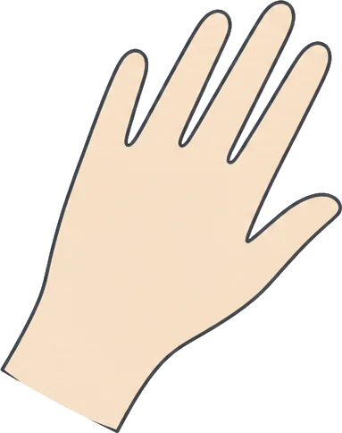
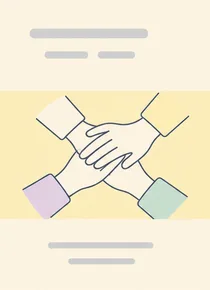
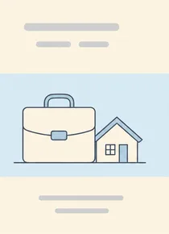
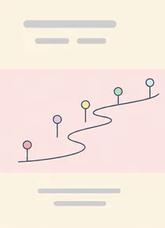
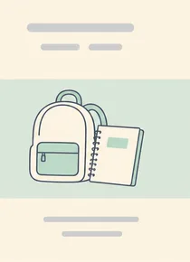

Who we are
かさねてのこと
「かさねて」は、家族の介護を担っている人と、介護を終えた人がいっしょにつくっている会です。2021年の春、介護の経験がある4人が公民館の小さな部屋に集まったのがはじまりでした。
専門家が教える場所ではありません。同じ立場の人が順番に話して、順番に聞く。結論を急がず、助言もしすぎない。その時間を毎月続けることを、いちばん大事にしています。
会費はいただいていません。会場費や通信費は、サポーターのみなさんからのご寄付でまかなっています。
団体概要
- 団体名
- ケアラーのつどい かさねて
- 設立
- 2021年6月
- 代表
- 芹沢 みのり
- 世話人
- 4名（いずれも家族介護の経験者）／ボランティア 18名
- 所在地
- 〒432-8021 静岡県浜松市中央区佐鳴台四丁目23-11
佐鳴台コミュニティ棟 2F - 連絡先
- 053-919-4820（FAX 053-919-4821）
hello@kasanete-care.org - 会員数
- 214名（2026年8月時点）
- 会費
- なし（運営はご寄付でまかなっています）
- 主な活動
- オンライン・対面のつどい／ヤングケアラーの相談時間／
学校・地域での出張講座／聞き取り調査と冊子の発行
ビジョン
介護を担う人が、自分の時間を手放さずに暮らせる地域をつくる
ミッション
①ケアラーが孤立しない場を、毎月ひらき続ける
②ケアラーの声を集めて、地域の支援のかたちに届ける
代表メッセージ
話せる相手がひとりいるだけで、
介護の一日はすこし変わります。
芹沢 みのり
せりざわ・みのり
かさねて代表
父が倒れたのは、わたしが35歳のときでした。仕事を続けながらの在宅介護は、九年つづきました。
毎日のようにやることは増えるのに、だれかに話すのは後回しになりました。心配をかけたくない、うまく説明できない、そもそも話す時間がない。気づけば、家と職場のあいだを往復するだけの日々でした。
限界だと思ったとき、市の窓口で紹介されたのが、介護をしている人が集まる小さな会でした。制度の説明ではなく、ただ話を聞いてもらった一時間で、翌週の見通しが立ったのを覚えています。
そういう場が、もっと近くにあればいい。そう思って声をかけたところ、同じことを考えていた三人と出会い、会をはじめることになりました。
五年のあいだに、たくさんの方が来ては、また来なくなり、しばらくして戻ってこられます。それでいいと思っています。必要なときだけ寄れる場所であることが、この会のかたちです。
ひとりで抱えているとかたくなるものも、だれかと分ければすこしゆるみます。その三十分のために、毎月ひらいています。
あゆみ
- 2021年6月
- 浜松市内の公民館で第1回のつどいを開催（参加4名）
- 2021年11月
- オンライン（Zoom）でのつどいを開始
- 2022年4月
- 会員100名。ニュースレターの配信をはじめる
- 2022年10月
- 市内の地域包括支援センターと連携し、案内チラシの設置がはじまる
- 2023年5月
- ヤングケアラー向けの相談時間を、つどいとは別に設ける
- 2024年2月
- 中学・高校での出張講座を開始（初年度 6校）
- 2024年9月
- 佐鳴台コミュニティ棟に拠点を移し、対面のつどいを偶数月の定例にする
- 2025年3月
- 「浜松ケアラー聞き取り調査2025」を公開（回答214件）
- 2025年11月
- ケアラーカフェ「はなしの持ちより」をはじめる
- 2026年6月
- 設立5年。累計の参加のべ人数が2,000名を超える
調査・レポート
-

浜松ケアラー聞き取り調査2025 報告書
2025年3月発行／A4・36ページ
市内で家族の介護をしている方への聞き取りをまとめました。困りごとの中身を、数字よりも本人のことばで残すことを心がけています。
-

「はたらきながら介護する」実態レポート2026
2026年4月発行／A4・24ページ
仕事と介護を両立している会員への聞き取りから、職場に話すまでの迷いや、休み方の工夫を集めました。
-

かさねて 4年のあゆみ（2021–2025）
2025年8月発行／A5・48ページ
第1回のつどいから4年分の記録です。世話人の座談会と、参加者から寄せられた短い手紙を収めています。
-

ヤングケアラー支援ハンドブック
2024年2月発行／A5・20ページ
出張講座で配っている冊子です。先生や身近な大人に向けて、気づき方と声のかけ方をまとめました。
冊子はどれも無料でお送りしています（数に限りがあります）。
お問い合わせフォームの「冊子のご請求」からお申し込みください。